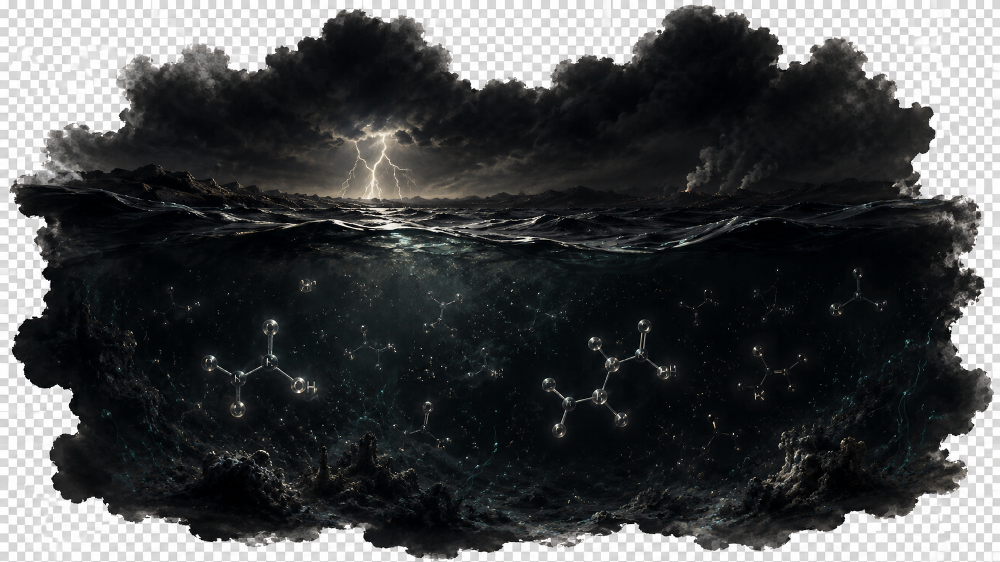
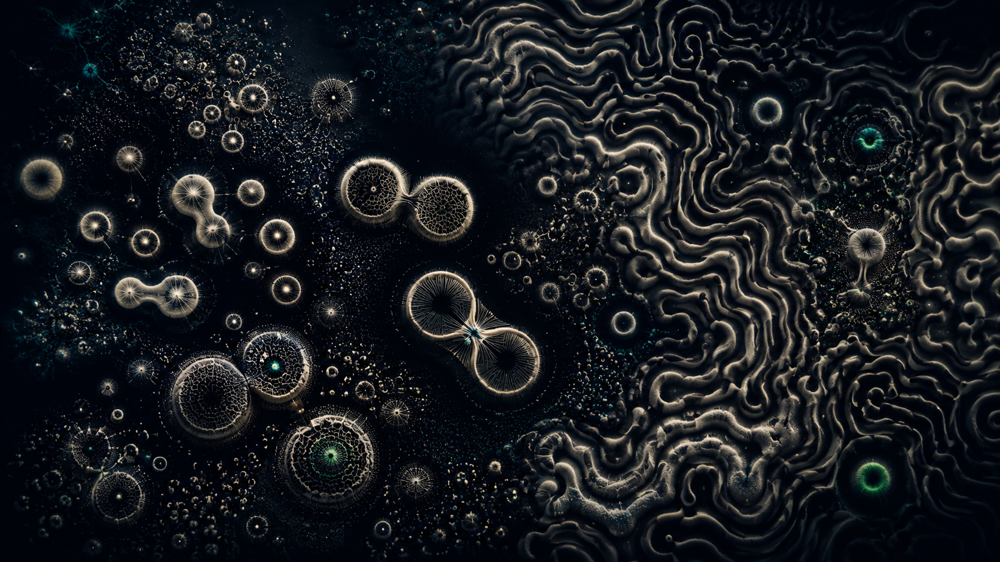
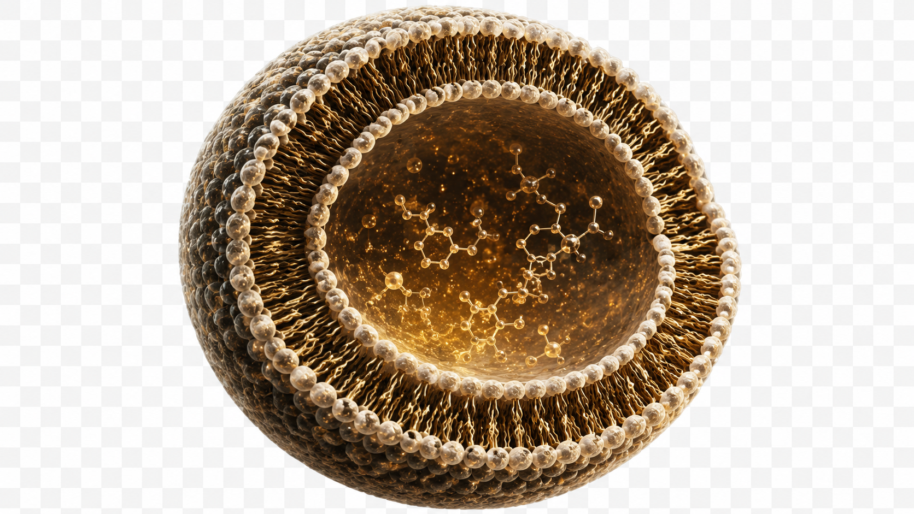
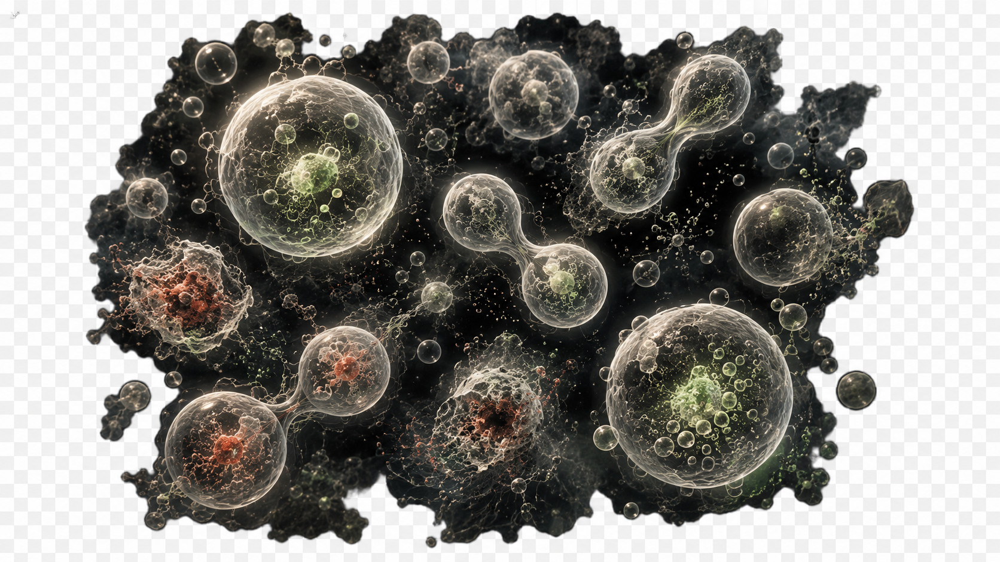
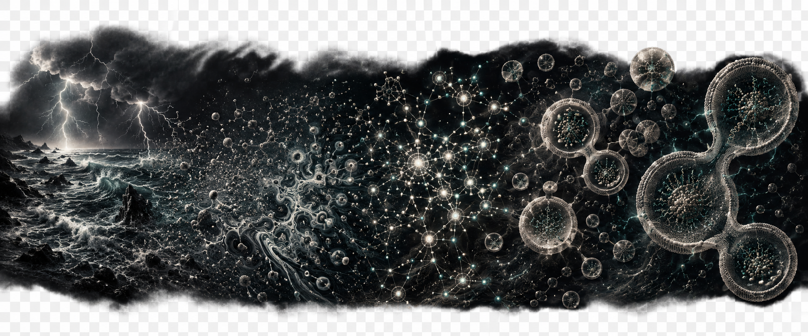

I O B S E R V A T I O N
SELECT A RULE
II C O N F I G U R A T I O N
30
5
space play/pause s step r reset c clear n randomize 1–4 rule m SEM mode p palette
III M A R G I N A L I A
Loading…
IV T H E R E S T O F T H E S T O R Y
The four rules above are the JS-portable subset. The other eight origin-of-life stages — alkaline vents, autocatalytic sets, mineral catalysis, RAFs, homochirality, the RNA world, the genetic code, coacervates, vesicles, and LUCA distillation — run in the Python build. Plates rendered from each:




